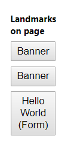
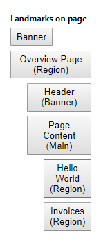

Step 38: Accessibility
Step 38: Accessibility
To achieve this, we will add ARIA attributes. ARIA attributes are used by screen readers to recognize the application structure and to interpret UI elements properly. That way, we can make our app more accessible for users who are limited in their use of computers, for example visually impaired persons. The main goal here is to make our app usable for as many people as we can.
ARIA is short for Accessible Rich Internet Applications. It is a set of attributes that enable us to make apps more accessible by assigning semantic characteristics to certain elements. For more information, see Accessible Rich Internet Applications (ARIA) – Part 1: Introduction.
Preview

Coding
You can view and download all files at Walkthrough - Step 38.
One part of the ARIA attribute set is the so-called landmarks. You can compare landmarks to maps in that they help the user navigate through an app. For this step, we will use Google Chrome with a free landmark navigation extension We will now add meaningful landmarks to our code.
webapp/view/Overview.view.xml
<mvc:View
controllerName="sap.ui.demo.walkthrough.controller.App"
xmlns="sap.m"
xmlns:mvc="sap.ui.core.mvc">
<Page title="{i18n>homePageTitle}">
<landmarkInfo>
<PageAccessibleLandmarkInfo
rootRole="Region"
rootLabel="{i18n>Overview_rootLabel}"
contentRole="Main"
contentLabel="{i18n>Overview_contentLabel}"
headerRole="Banner"
headerLabel="{i18n>Overview_headerLabel}"/>
</landmarkInfo>
<headerContent>
…
</headerContent>
<content>
…
</content>
</Page>
</mvc:View>
We use sap.m.PageAccessibleLandmarkInfo to define ARIA roles and labels for the overview page areas. For more information, see the API Reference:
sap.m.PageAccessibleLandmarkInfo.
webapp/view/InvoiceList.view.xml
<mvc:View controllerName="sap.ui.demo.walkthrough.controller.InvoiceList" xmlns="sap.m" xmlns:mvc="sap.ui.core.mvc"> <Panel accessibleRole="Region"> <headerToolbar> <Toolbar> <Title text="{i18n>invoiceListTitle}"/> <ToolbarSpacer/> <SearchField width="50%" search=".onFilterInvoices" ariaLabelledBy="searchFieldLabel" ariaDescribedBy="searchFieldDescription" placeholder="{i18n>searchFieldPlaceholder}"/> </Toolbar> </headerToolbar> <Table id="invoiceList" class="sapUiResponsiveMargin" width="auto" items="{ path : 'invoice>/Invoices', sorter : { path : 'ShipperName', group : true } }"> <columns> <Column hAlign="End" … </columns> </Table> </Panel> </mvc:View>
sap.m.Panel around the invoice list, and we move the toolbar from the table into the panel so the region can take
the title of the toolbar as its own. This has the effect that it will now be a region in our landmarks.webapp/view/HelloPanel.view.xml
<mvc:View
controllerName="sap.ui.demo.walkthrough.controller.HelloPanel"
xmlns="sap.m"
xmlns:mvc="sap.ui.core.mvc">
<Panel
headerText="{i18n>helloPanelTitle}"
class="sapUiResponsiveMargin"
width="auto"
expandable="{device>/system/phone}"
expanded="{= !${device>/system/phone} }"
accessibleRole="Region">
…
</Panel>
</mvc:View>
accessibleRole attribute.
To add ARIA roles, labels and panels to other views, for example your Detail.view.xml, you can follow the same pattern. We
won't go into detail in this tutorial step, but if you're interested, simply download the tutorial code and take a look at the
Detail.view.xml.
webapp/i18n/i18n.properties
...
#Overview Page
Overview_rootLabel=Overview Page
Overview_headerLabel=Header
Overview_contentLabel=Page Content
ratingTitle=Rate the Product
...Result
|  |  |
| Landmarks on the overview page - before | Landmarks on the overview page - after |
As you can see, we now have four landmarks on our page. The top three landmarks structure our page:
-
Overview Page marks the complete page.
-
Header marks the page title.
-
Page Content marks the content of our page. This landmark already has two children.
Congratulations!
You've completed the walkthrough, good job! You should be familiar with all major development paradigms of SAPUI5 now. Our other tutorials focus on certain aspects of SAPUI5, so feel free to explore!Parent topic: Walkthrough
Previous: Step 37: Content Density